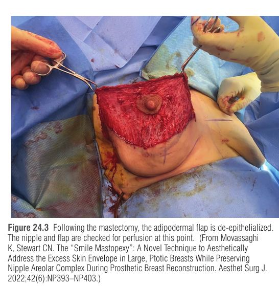
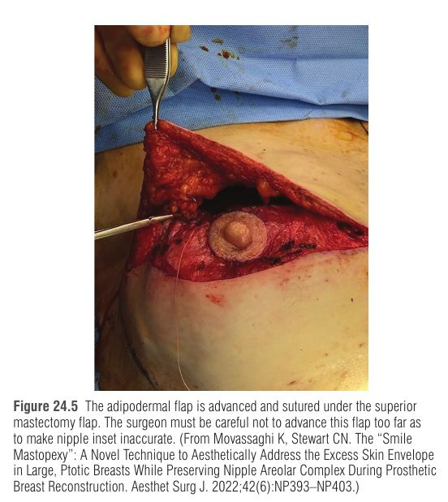

פרק 24: הפחתת עור בטכניקת "Smile Mastopexy" בשחזור שד Skin reduction using smile mastopexy technique in breast reconstruction
מתוך Plastic Surgery, Neligan – כרך 5: Breast | פרק 24, מאת Kiya Movassaghi ו-Christopher N. Stewart
שחזור שד מיידי מבוסס שתל (implant-based breast reconstruction) מניב תוצאה אסתטית טובה כשהמעטפת העורית ומתחם פטמה-עטרה (NAC – nipple-areolar complex) נשמרים. הבעיה: בשד גדול ו/או צנוח (ptotic) יש עודף עור, ושמירת הפטמה נחשבה בעבר מונע-התוויה בגלל חשש לאיסכמיה. הפרק מציג את Smile Mastopexy (SM) – טכניקה שמפחיתה עור בשני הווקטורים, משמרת את ה-NAC ומוסיפה עובי לקוטב העליון.
1 הבעיה והרציונל – למה צריך טכניקה חדשה
שד גדול/צנוח ← עודף דש עור ← מעטפת עור רחבה ← מתח וסיכון לנמק עור, צורך בשתל גדול יותר, קושי לשלוט בכיס ← ולכן שמירת NAC נחשבה מסוכנת. בנוסף, שד כזה מגיע לעיתים עם תחלואה נלווית (השמנה, סוכרת, מחלות לב) שמעלה עוד את הסיכון.
הגישה הקלאסית – כריתת אליפסה של עור ו-NAC מעל מרכז השד – מטפלת בעודף רק בווקטור האנכי, ולכן גורמת ל-dog ears לטרליים, לאובדן ה-conus (שד שטוח, חסר היטל) ולקוסמטיקה גרועה.
השוואת טכניקות להפחתת עור בזמן מסטקטומיה
טכניקה
עיקרון
חסרונות / מגבלות
אליפסה מעל הפטמה (קלאסי)
כריתת עור + NAC בכיוון אנכי
הפחתה רק אנכית, dog ears, אובדן conus, אין שימור פטמה
Wise pattern (inverted-T)
הפחתה אנכית + אופקית; יכולה להיות מדורגת (הפחתה לפני מסטקטומיה) או באותו ניתוח עם דש ADF תחתון
קושי לקבוע במדויק את ההפחתה האופקית, קוטב תחתון צר אם זוויות האנכיים רחבות; מתח על נקודת ה-T בדשים של 7-9 ס"מ ← פתיחת פצע, חשיפת שתל, אקספלנטציה. Nava: נמק עור ב-14% עם חשיפת שתל; ספרות: עד 30% סיבוכים מג'וריים, בקורלציה למשקל הדגימה
Buttonhole mastopexy
דש עורי עליון המכסה ADF תחתון גדול; משמר NAC
מתאים רק לצניחה קיצונית: לפחות 8 ס"מ מהמיקום החדש של הפטמה לגבול התחתון של הדש העליון, אחרת ממירים ל-Wise
Bell pattern
הפחתה בשני הכיוונים בלי לאבד את ה-conus
אינו משמר פטמה, כיוון הצלקת לא אידיאלי
Smile Mastopexy
דש אדיפו-דרמלי (ADF) מנותק אפיתל, מוקדם מעלה ומוכנס מתחת לדש המסטקטומיה העליון
תלוי באספקת הדם של הדש (דש קבור – נמק לא נראה); דורש דש מסטקטומיה בעובי אחיד
בעיה נוספת בכל הטכניקות: היעדר עובי בקוטב העליון ⇒ rippling גלוי של השתל. ADM דק אינו פותר זאת באמת, והשתלת שומן תורמת שיפור בינוני ולעיתים מצריכה כמה סבבים. ב-SM עובי נוסף מגיע מהדש עצמו.
2 אלגוריתם בחירה
כל המטופלות חייבות לעמוד בקריטריונים אונקולוגיים לשימור פטמה (nipple-sparing).
ptosis דרגה 0-1: חתך לטרלי/אינפרולטרלי, ללא הפחתת עור. ptosis דרגה 2-3 (עודף בקוטב העליון) – ההבדל נקבע לפי עודף בקוטב התחתון, כלומר מרחק N:IMF (פטמה – קפל תת-שדי):
• N:IMF ≤ 7 ס"מ ← half-snitch (עיצוב "כנפי עטלף") – מרים את הפטמה בלי לקצר את ה-N:IMF.
• N:IMF > 7 ס"מ ← מועמדת ל-Smile Mastopexy. בשלב ב': אם נמתח הקוטב התחתון או שיש אסימטריית NAC ← snitch lift (חצי או מלא) ללא צלקות חדשות.
מקור השם "snitch": הדמיון ל-"Golden Snitch" מהארי פוטר (מקור ספרותי, לא מדעי). השם "Smile" משקף את צורת הרצועה המסומנת מעל ה-IMF (פרשנות להמחשה).
3 אנטומיה וסימונים
נקודת Pitanguy – מיקום הפטמה החדשה: ההטלה הקדמית של ה-IMF על מרידיאן השד. החתך העליון עובר דרכה בקו מעוגל (curvilinear), בלי להרחיב מדיאלית מעבר למיקום החזייה.
מודדים 7 ס"מ מאמצע ה-IMF לכיוון נקודת Pitanguy ⇒ זה ה-N:IMF החדש. דרך נקודה זו עובר החתך התחתון, מקביל לקוטב התחתון ומתחבר לקצוות הלטרלי והמדיאלי של הקו העליון.
העור שבין שני הקווים = ה-ADF (יוסר ממנו האפיתל, יהפוך לדש מועבר כלפי מעלה).
ה-NAC מסומן בחותך עגול 4.2 ס"מ ("cookie-cutter").
אספקת דם לפטמה: חשוב לשמור על הענף החמישי של כלי ה-internal mammary (תרומה וסקולרית משמעותית ל-NAC), על ה-subdermal plexus, ולא לפרוץ את ה-IMF.
איור סכמטי (לא בקנה מידה): הרצועה הצהובה היא ה-ADF שעוברת de-epithelialization ומוזזת כלפי מעלה מתחת לדש העליון.
אזור ה-de-epithelialization וה-adipodermal flap — Neligan 5th ed., Fig. 24.2
4 הטכניקה הניתוחית – שלב א'
חתך סביב ה-NAC + de-epithelialization של ה-ADF (קל יותר לפני המסטקטומיה, אפשרי גם אחריה) → מסטקטומיה דרך החתך העליון בעובי מלא → בדיקת כיס ושחזור הקו האקסילרי הקדמי → הנחת expander → בדיקת זילוח ה-ADF → הזזת הדש מעלה ותפירה מתחת לדש העליון → חלון בדש העליון להוצאת ה-NAC → סגירה בשתי שכבות + נקז.
פרטים חשובים בניתוח
שלב
פרטים
מסטקטומיה
תקשורת בין מנתח שד למנתח פלסטי: שכבת שומן תת-עורית אחידה מתחת לדש, שימור ה-subdermal plexus, אי פריצת ה-IMF, שימור הענף ה-5 של ה-IMA
קו אקסילרי קדמי
הכיס נפרץ בדרך כלל כאן: תפירת הדש הלטרלי לדופן בתפרים נספגים + חיזוק ב-P4HB mesh (7.5 x 10 ס"מ) כ-onlay למניעת lateral malposition
Expander
דו-תאי מחוספס (textured), עם קיבוע בלשוניות; ממולא חלקית בלבד (לא למלא יתר על המידה)
בדיקת זילוח
מילוי נימי (capillary refill) 3-5 שניות באופן אידיאלי + דימום נקודתי בקצה הדיסטלי (העליון) של ה-ADF; חלופה: ICG angiography. אם הזילוח לקוי – גוזמים את הדש עד לדימום תקין
זילוח ה-NAC לקוי
ניתן לנתק את ה-NAC מה-ADF וליישם כשתל חופשי (יתרון ה-SM)
פטמה שהוסרה אחרי פתולוגיה
"Coring" כמה שבועות אחרי שלב א'; סגירה ראשונית או nipple-sharing בשחזור דו-צדדי
הוצאת ה-NAC
חצי עליון של העיגול 4.2 ס"מ על הדש העליון: de-epithelialization וחיתוך אנכי של הדרמיס; החצי התחתון בשיטת tailor-tack על הדש התחתון. אם ה-ADF ארוך מתחת ל-NAC – imbrication ב-6 o'clock
תפרים
2-0 Vicryl בודדים (interrupted), מהצדדים לעבר ה-NAC, ללא נשיכות עמוקות מדי
ככל שהפטמה צנחה יותר בהתחלה, כך ה-ADF ארוך יותר ויכול להוסיף יותר עובי לקוטב העליון. כמו כן, במקרים אלו בדרך כלל לא משתמשים ב-ADM (רק P4HB לתמיכה לטרלית).

דש אדיפודרמלי עם דה-אפיתליזציה לאחר המסטקטומיה — Neligan 5th ed., Fig. 24.3

קידום הדש האדיפודרמלי ותפירתו מתחת לדש העליון — Neligan 5th ed., Fig. 24.5
5 טיפול לאחר הניתוח ושלב ב'
ללא חזייה/חבישה הדוקה (להפחית לחץ ומתח). ניתוח אמבולטורי. המטופלת נשארת בעיקר שוכבת (פרט להליכה) להורדת מתח מהדש התחתון.
נקז אחד לשד, מוסר כש-output קטן מ-25 סמ"ק ב-24 שעות (בדרך כלל 7-14 ימים). אנטיביוטיקה עד הוצאת הנקזים.
אחרי שבועיים – אם אין חשש, מתחילים הרחבה עד ההיטל הרצוי.
ללא הקרנה: שלב ב' כעבור 5-6 חודשים. עם הקרנה מתוכננת: 6 חודשים אחרי סיום ההקרנה.
שלב ב' דרך חתך IMF חדש (לא פותחים מחדש את צלקת ה-SM) – חשוב במיוחד אחרי הקרנה עם boost על הצלקת (סיכון לריפוי מושהה/דהיסנס). צלקות SM נפתחות רק שטחית לתיקוני מעטפת.
ממצא בשלב ב'
הטיפול
פער במרחק SN:N (עודף בקוטב העליון)
Half-snitch עליון
פער/מתיחה בקוטב התחתון
Half-snitch תחתון
פערים בשני הקטבים
Full snitch lift
6 תוצאות וסיבוכים
פרמטר
ערך (ממוצע/טווח)
מטופלות / שדיים
30 / 54, מעקב 2 שנים
גיל
50 (30-74)
BMI
31 (19-43)
משקל דגימת מסטקטומיה
688 גרם (176-1368)
נפח שתל סופי
650 סמ"ק (400-800)
סיבוכים כלליים
כ-13% (7/54)
מינורי / מג'ורי
מינורי: ריפוי מושהה, טיפול שמרני. מג'ורי: נדרשה פעולה (למשל כריתת עור)
שימי לב: הטבלה והטקסט בפרק אינם עקביים לגבי חלוקת מינורי/מג'ורי ושיעור איבוד השתל (בטבלה 0/54 איבוד שתל, בטקסט 3.7%). לבחינה – היזכרי בעיקר בשיעור הכולל הנמוך יחסית (~13%) ובאופי התוצאה (n קטן, מנתח יחיד).
מגבלות
אספקת הדם של ה-ADF – דש קבור: נמק/איסכמיה עלולים לא להיראות. הפטמה היא אינדיקטור, אך אפילו נמק חלקי של הדש עלול לסכן את השתל.
הערכת זילוח נעשתה ויזואלית (לא היה ICG בחדר אמבולטורי); expanders מולאו חלקית במכוון.
בשחזור direct-to-implant עם SM – ייתכן צורך בעטיפת ADM/mesh לייצוב השתל והורדת מתח מהדש התחתון.
מסטקטומיה שמסירה פרנכימה ושומן תת-עורי ויוצרת דש דק וחלש זילוח – SM לא ישים.
מגבלה מתודולוגית: סדרה קטנה של שני מנתחים.
7 טכניקות זכירה
ראשי תיבות: S-M-I-L-E
S – Standing marking: סימון בעמידה, נקודת Pitanguy. M – Measure 7 cm מה-IMF לקו התחתון (N:IMF חדש). I – Incise around NAC + de-epithelialize ה-ADF. L – Look at perfusion: CRT 3-5 שניות / ICG. E – Expander ממולא חלקית בלבד.
סיפור דמיוני
דמייני חיוך רחב על השד: ה"שפתיים" הן רצועת עור שמורידים מהן את הקליפה (הדש). החיוך "נבלע" מתחת לשפה העליונה וגורם לשד שלם להתרומם כמו לחי מחייכת – והעטרה, כמו כדור-זהב קטן (snitch), מציצה החוצה דרך חלון בקצה העליון.
8 מקורות
Movassaghi K, Stewart CN. The "Smile Mastopexy": A Novel Technique to Aesthetically Address the Excess Skin Envelope in Large, Ptotic Breasts While Preserving Nipple Areolar Complex During Prosthetic Breast Reconstruction. Aesthet Surg J. 2022;42(6):NP393-NP403.
המאמר המקורי שעליו מבוסס הפרק (מצוטט בספר, ללא קישור).
Nava MB et al. Skin-reducing mastectomy. Plast Reconstr Surg. 2006;118(3):603-610.
דיווח על 14% נמק עור עם חשיפת שתל בטכניקת Wise-based.
Corban J et al. A systematic review of complications associated with direct implants vs tissue expanders following Wise pattern skin-sparing mastectomy. J Plast Reconstr Aesthet Surg. 2017;70:1191-1199.
ביקורת שיטתית על סיבוכי Wise pattern.
Salibian AH, Harness JK, Mowlds DS. Primary buttonhole mastopexy and nipple-sparing mastectomy. Ann Plast Surg. 2016;77(4):388-395.
תיאור טכניקת buttonhole.
9 מקרה קליני ותרגול
וינייטה
אישה בת 52 עם BMI של 32, שד ימין עם סרטן ממאיר בשלב מוקדם, ללא סימני מעורבות פטמה בהדמיה ולא בפתולוגיה בביופסיה. שדיה גדולים עם ptosis דרגה 3. היא מבקשת שחזור מיידי עם שימור הפטמה. בבדיקה: מרחק N:IMF של 10 ס"מ, עודף עור בקוטב העליון והתחתון. הצוות האונקולוגי מאשר nipple-sparing mastectomy.
נכון: ב-ptosis 2-3 עם N:IMF גדול מ-7 ס"מ (עודף גם בקוטב התחתון) – מועמדת ל-SM. תשובה 1 מתאימה ל-ptosis דרגה 0-1. תשובה 2 מיועדת ל-N:IMF של 7 ס"מ ופחות (שם מרימים פטמה בלי לקצר את N:IMF). תשובה 4 – bell pattern לא משמר פטמה.
2. מהו מרחק היעד המסומן מאמצע ה-IMF לקו התחתון של ה-ADF, ומה הוא קובע?
נכון: 7 ס"מ מה-IMF לכיוון נקודת Pitanguy הם ה-N:IMF החדש. 4.2 ס"מ הוא קוטר ה-cookie-cutter של ה-NAC. 8 ס"מ מאפיין את buttonhole mastopexy. מילוי נימי הוא 3-5 שניות ולא ס"מ.
3. במהלך הניתוח, הפטמה נראית תקינה אך הדימום בקצה הדיסטלי של ה-ADF חלש. מה הפעולה הנכונה?
נכון: הדש קבור, ואיסכמיה שלו לא תיראה – לכן גוזמים עד לדימום תקין. תשובה 1 מסוכנת כי נמק חלקי של הדש מסכן את השתל. תשובה 2 מגדילה מתח ומחמירה איסכמיה (לכן ה-expander מולא חלקית בלבד). תשובה 3 – אם זילוח ה-NAC עצמו לקוי אפשר להשתמש בו כשתל חופשי; לא מבצעים ADM בטכניקה זו כברירת מחדל.
4. כעבור 6 חודשים (ללא הקרנה) נותרה מתיחה של הקוטב התחתון ואסימטריה קלה. איך מתבצע שלב ב'?
נכון: שלב ב' דרך IMF חדש כדי לא להפריע למשטח המאוחד של צלקת SM; צלקות SM נפתחות רק שטחית. מתיחת קוטב תחתון ← half-snitch תחתון (full snitch אם יש פערים בשני הקטבים). תשובה 1 מסכנת את הריפוי. תשובה 3 מוסיפה צלקות חדשות – כל היתרון של snitch הוא היעדר צלקות חדשות. תשובה 4 לא מוצדקת.
5. איזה נתון אינו נכון לגבי המגבלות/יתרונות של SM?
נכון (התשובה השגויה היא 3): הערכת זילוח היא קריטית – "paramount" לפי הפרק. שאר ההיגדים נכונים: דש קבור (1), עובי נוסף ופחות rippling (2), ודש מסטקטומיה דק וחלש זילוח מונע SM (4).
10 סיכום של הסיכום
SM: הפחתת עור בשני וקטורים + שימור NAC + עובי נוסף לקוטב העליון (פחות rippling) בשחזור מיידי מבוסס שתל בשד גדול/צנוח.
אלגוריתם: ptosis 0-1 ← חתך לטרלי; ptosis 2-3 עם N:IMF ≤ 7 ← half-snitch; N:IMF > 7 ← SM. חובה כשרות אונקולוגית לשימור פטמה.
ניתוח: de-epithelialize, מסטקטומיה, שימור ענף IMA 5, expander מולא חלקית, P4HB לטרלי (לא ADM), בדיקת CRT 3-5 שנ'/ICG, חצי עליון של ה-NAC על הדש העליון.
אחרי: נקז עד <25 סמ"ק/24 שעות, הרחבה אחרי שבועיים, שלב ב' 5-6 חודשים (6 חודשים אחרי הקרנה) דרך IMF חדש; snitch lift לתיקונים.